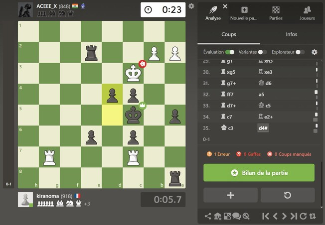
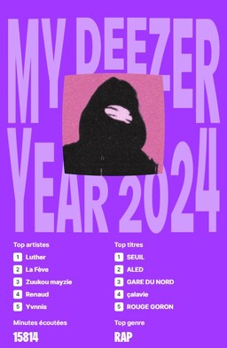

[Un échec et mat]Les échecs sont plus qu'un jeu pour moi, c'est une bataille mentale qui combine stratégie, réflexion et prédiction. Je joue aux échecs depuis 3 ans et je sens ma progression a chaque partie, actuellement je joue sur le site chess.com et je me situe autour des 970 elo.
J'adore les jeux vidéos depuis que je suis petit, j'ai commencé sur l'ordinateur de mon père avec le jeu "Minecraft" et depuis je n'ai jamais arrêté. J'aime le coté relaxant de jouer avec des amis et passer des bons moments, en ce moment je joue a "League Of Legends" ainsi que "Minecraft".

[Mon récapitulatif musicale 2024]La musique est quelque chose d'important pour a mes yeux, je ne passe pas 1 jour sans musique et je ne m'en lasse jamais grace a la variété de celle ci. Le fait que chaque artistes aient son propre univers est quelque chose que j'aime beaucoup, j'écoute des rappeurs français comme "Luther" ou "Alpha Wann" et également de la variété française.